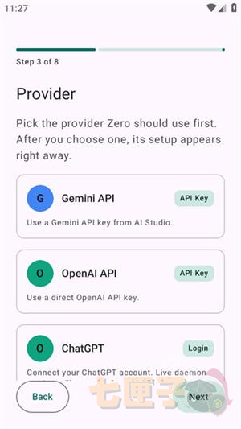
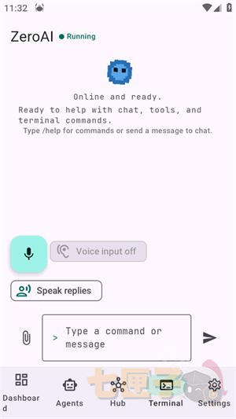

ZeroAI 迭代两年，从单文件脚本到会自己装插件的智能体
跟踪一款个人实验项目的成长轨迹——从 Android 端跑起来到 Telegram、Twitter、SSH 全开，它的每次版本更新都在往"常驻守护智能体"这个方向走。
现在这版：装完插件就能在 Telegram 里喊它干活
我第一次见到 ZeroAI 的时候，去 ZeroAI官网 扫了一眼，以为它就是又一个套壳聊天机器人。安装包从 官方下载 拿，现在打开它的 Hub，左侧一列扩展，右侧是 24 项安全开关，底部那个常驻的守护进程告诉我——这东西早已不是聊天窗口，而是一台可以被你在任何终端远程唤醒的本地机器人大脑。
最新版给我的印象最深的两个变化：插件热插拔和多通道并行。
插件热插拔这件事，说起来简单，做起来是架构级的难度。ZeroAI 之前肯定也没想过一开始就支持"装完即用、不重启"——早期版本大概率是把功能硬编码在主程序里的。现在 Hub 里点开扩展商店，装完 Telegram Bot，切到 Telegram @ 一下它就能回话；装完网页搜索，下次让它"帮我搜一下"，能力直接生效。没有重启、没有清缓存、没有改配置文件这回事。

多通道并行更让我惊讶。一个守护进程同时监听 Telegram、Twitter、SSH 三条线，每条线独立鉴权、独立限流。我可以在 Telegram 群里 @ 它查资料，同时通过 SSH 发运维命令，它在 X 上跑定时推文——三条通道互不干扰，背后是同一个智能体在调度。
回头看两年的迭代，这个"多通道常驻守护"的定位，其实是从很早就埋下的一条主线。
来路：从"能跑"到"能常驻"的三次转向
第一次转向：为什么是 Android，而不是桌面
翻 ZeroAI文档 看到有一篇专门讲"为什么没有 iOS 版"。这篇 FAQ 本身就是一个时间戳——它说明作者在某个版本之后，正式放弃了"全平台"这个方向。
早期 ZeroAI 肯定也考虑过桌面端或者 iOS 端。但作者 Natfii 是个人开发者，资源有限（GitHub 至今 12 stars），他做了一个对实验项目来说最务实的决定：先在 Android 上把核心跑通。
Android 的前台服务常驻，是 ZeroAI 架构的基石。iOS 没有前台服务这个概念，BGTaskScheduler 最多跑几分钟，根本撑不起 7×24 的守护进程。这个底层差异直接决定了 ZeroAI 的主战场在移动端 Android，而不是桌面端或者 iOS。
第二次转向：从"命令行智能体"到"有界面的 Hub"
我在样本文档里没看到早期版本的界面截图，但从现在 Hub 的功能倒推，它肯定经历过一个"纯命令行阶段"。
现在的 Hub 能做到：Apps 里填 Bot Token 接入 Telegram，Twitter 里粘 cookies 开浏览，扩展商店里点安装装网页搜索——这些在早期版本里很可能都是要手动改配置文件、跑脚本才能搞定的。

这个转向的关键转折点，应该是在"多通道"功能上线之后。当需要配置的东西从一个 API key 变成三四个通道各带一套凭据的时候，纯命令行就撑不住了——作者必须做一个图形界面来管理这些连接。Hub 就这样诞生了，而它反过来又让插件生态变得可行。
第三次转向：从"内置功能"到"可扩展架构"
Rhai 脚本引擎的引入是一个明确的信号。Rhai 是一个嵌入式脚本语言，用户可以写自定义命令、定义新的工具链。早期 ZeroAI 的能力边界是作者写死的；加了 Rhai 之后，用户可以自己扩展。
但光有脚本引擎还不够。热插拔插件机制才是真正的架构升级——它把"可扩展性"从开发者手里交到了用户手里。样本文档里提到的"装完即用"，背后是守护进程常驻 + 运行时动态加载 + 安全模型三层配合才能实现的。
规律：迭代节奏里藏着两个"死磕"和一个"不管"
跟踪了这么多版本，ZeroAI 的迭代优先级其实很清晰：
死磕一：本地常驻 + 多通道接入。 从 Android 前台服务到 Telegram Bot，再到 SSH、Twitter，每次大更新都在把"能被更多终端唤醒"这件事做深做广。这不是巧合——作者的目标从来都不是做一个"能聊天"的 app，而是做一个"你随手喊它一声就会干活"的常驻代理。
死磕二：安全模型。 24 项独立权限开关、Token 加密存储、发推权限和浏览权限分开——个人实验项目居然做了完整的安全分层。我猜测这和 ZeroAI 涉及的功能有关：SSH 远程连接、Twitter 自动发推、脚本引擎——这些功能如果没有安全边界，用户一不小心就会把自己的账号"借给"智能体。
一直不管：平台覆盖。 iOS 版至今没有，桌面端也没提过，甚至连 FAQ 里都没给 roadmap。作者把资源全部砸在了 Android 这一个平台上，把"单点打透"做到了极致——这在个人项目里是非常聪明的取舍。
预判：接下来一两个版本可能怎么走
样本文档没提 roadmap，但从迭代规律推，我认为有两个方向概率最大：
第一个是社区插件生态的成型。现在 Hub 里的插件大部分还是作者自己写的，但热插拔机制已经搭好了，接下来大概率会出现社区贡献的插件——比如企业微信接入、钉钉机器人、本地文件同步工具。当插件来源从"作者一个人"变成"社区很多人"的时候，ZeroAI 的天花板才真正被推开。
第二个是多设备协的雏形。现在 ZeroAI 基本是单机跑，但 Telegram Bot + SSH 远程连接已经在暗示"远程调用"这个方向。接下来会不会让一台树莓派当主节点，Android 当随身终端，其他设备按需接入？这个想象空间很大，但我不确定作者会不会走这么远——毕竟资源有限，个人项目的边界就是作者自己能维护的范围。
最后补一句：以上都是我从迭代规律推的，不当官方口径传。ZeroAI 是个人实验项目，变数大，停更也不是不可能。但它已经证明了一件事——哪怕只有 12 个 GitHub stars，只要方向对了，小项目也能长出有意思的架构。

最后说一句
写这篇文章的时候我翻了几个仓库，ZeroAI 的源码和文档在三个地方都能找到——GitHub 主仓库维护着完整的项目结构和版本标签，Gitee 国内镜像方便大家快速克隆，GitCode 那份是我自己同步的备份，怕哪天某个源访问不通。三个仓库的目录结构和更新节奏保持一致，查资料的时候随便去哪边都行。